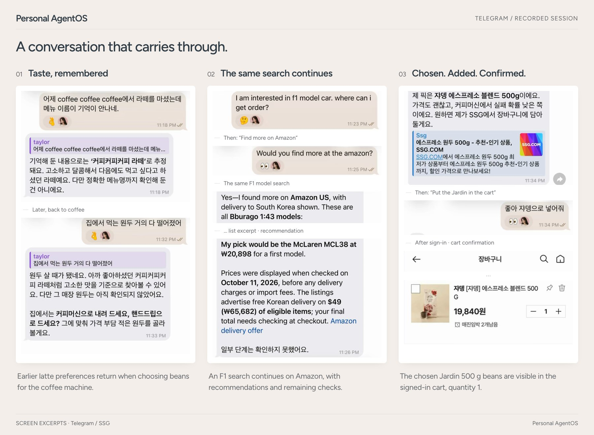

Still. Here with you.
A personal AI on your own computer. It works with the AI you already pay for, and stays yours when you change it.
Say less. It remembers.
What you told it last week comes back when it matters, and it says what each memory rests on. Every save can be undone.
Monday
My cat has been off her food lately. What should I try?
A few things worth trying first… I’ve noted that you have a cat.
Thursday
Find me a robot vacuum under $500.
Three under $500. I put the one that handles cat hair best first.
See real screens

Change the AI. Keep the assistant.
Your ChatGPT plan through Codex or your Claude plan through Claude Code does the work. Switch with one command in the middle of a conversation; Still carries on.
Changes when you want
- Codex
- Claude Code
- An API key
- Ollama
- Tools and connectors
Stays with you
- What it knows about you
- Unfinished work
- The permissions you gave
- A record of what ran
Where you already talk. With what you already use.
Talk to it in
- Telegram
- Slack
- Terminal
- Mattermost
- Browser
It works with
- Your folders
- Gmail
- Google Calendar
- Google Drive
- Sites you sign in to
Folders are read-only unless you say otherwise. Gmail organising is a separate permission, and Still never sends mail.
It works while you talk. It stops where you decide.
Before a long task it tells you the plan and which AI is on it. Ask something else meanwhile, or correct it halfway.
Find a birthday gift for Mum under $50.
CodexI’ll look for something she’d use every day, check reviews and delivery dates, then show you three.
How do you say thank you in Japanese?
Arigatō gozaimasu. The gift search is still going.
- Only what you connect. Folders, accounts and tools you choose.
- Payment waits for you. Adding to a cart and paying are different actions; every payment needs your yes.
- Secrets stay out. Passwords and tokens never reach a prompt, a log or the record of what ran.
Bring Still home tonight
A Mac, Linux or Windows (WSL2) computer and the ChatGPT or Claude subscription you already have.
curl -LsSf https://raw.githubusercontent.com/Jongtae/Still/main/scripts/install.sh | shThe URL pins the installer to one version; read the script before you run it. On an Apple silicon Mac with Homebrew: brew tap jongtae/still https://github.com/Jongtae/Still, brew install jongtae/still/agentos, then agentos start. On Windows, run wsl --install in PowerShell, restart, open Ubuntu and paste the command there.
-
Choose your AI
Setup runs in the terminal. Pick Codex, Claude Code or an API key; one you’re already signed in to is preselected. Still never sees that login.
-
Say hello
Talk to Still right there in the terminal, or on the Still screen at
127.0.0.1:8787. -
Bring it to your phone
Say “connect Telegram”, paste the token @BotFather gives you, and press Start in the pairing link.
Optional: give the chat Still’s look with a wallpaper (with Still or plain): in the Telegram chat, open the menu, choose Change Wallpaper and pick it from your photos.


Everything else is in the quick start guide.
Open code, built in the open.
Still is open source under AGPL-3.0. Product status lists what works today and what is still rough. The current version is v1.3.0.
View on GitHubTalk with us in Discussions
If Still helps you, a star on GitHub helps the next person find it.